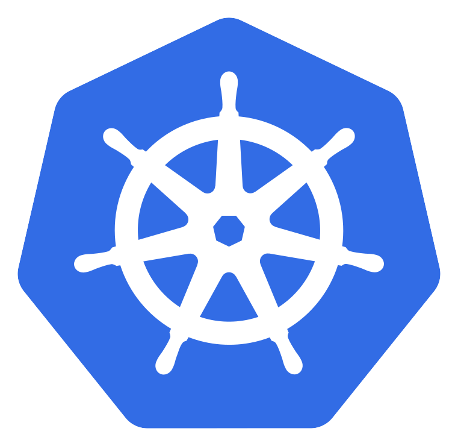
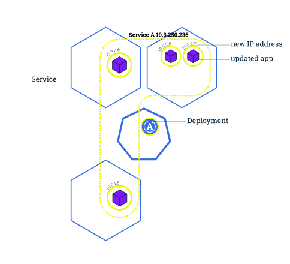

The Easy Way
The Easy Way
KUBER... what?
k[ubernete]s = k8s = helmsman = timonier üõ≥Ô∏è

Production-Grade Container Orchestration
- Projekt i realizuar nga Google ne 2014
- I bazuar ne eksperiencat e Borg dhe Omega
- I projektuar si nje nderthurje loosely coupled e shume komponenteve te specializuar ne levrimin,
mirembajtjen dhe shkallezimin e workloads
Abstracts away underlaying hardware
Nodes
Shared Pool
Shpjego qe ska me standalone servers po nje resource pool
Pets (every operation is customized with care and love for the individual app)
Manage your applications like Cattle (generic, bulk operations)
Decouples Infra and Scaling
- All Services are natively Load Balanced
- Scale Up and Down dinamically
- Self-Healing and seamless update and rollback
You (the admin) declares the
desired states, Kubernetes' main task is to make the
desired state the actual state.
jep nje shembull per self healing, kur kerkon 3 instanca te dickaje gjithmone do te jene 3.
shpjego rreth deplyments
Key Concepts
Pods
- Elementi baze i k8s
- Nje/Shume containers qe share volumes, network namespace
- Ephemeral = Vdekshem
fun fact: pod eshte grumbullim balenash. trego me shume se cfare share
shpjego rreth deployments qe jane shume pods qe komunikojne bashke. trego deployments strats
Services
- Metoda per te ndervepruar me Pods
- Resource jetegjate
- Static Cluster IP
- DNS name
- Jo Ephemeral = Pavdekshem
 shpjego rreth labels dhe si nderveprojne me services
shpjego rreth labels dhe si nderveprojne me services
Sample Worklfow
cluster

app

pods

nodes

svc

labels

scale-1

scale-2

upd-1

upd-2

upd-3

upd-4
Architecture Overview
shpjego diagramen dhe trego cdo komponenet. mos harro reconcillation loop
Control Plane Componenets
- kube-apiserver
- etcd
- kube-controller-manager
- kube-scheduler
kube-apiserver
- Forward facing REST interface
- Interact with k8s strictly through API server
- Cluster Gatekeeper - handle auth, req validation, etc
- cluster datastore
- key-value store for persisting cluster state
- Store object and config info
kube-controller-manager
- Director behind the scenes
- Monitors the cluster statevia apiserver and steers the cluster towards the desired state
- Manages all core componenets control loops
doest not schedule dhe pods, just monitors the state. scheduler does that
kube-scheduler
- evaluates workload requirements
- req. can include: hardware, affinity/anti-affinity, labels, etc
Node Componenets
- kubelet
- kube-proxy
- container runtime engine
kube-proxy
- not a proxy
- manages network on each node
- performs connection forwarding or load balancing
container runtime engine
- container runtime interface that executes and manages containers
- containerd(docker)
- cri-o
- rkt(coreos)
- docker
- frakti
Cluster Overview